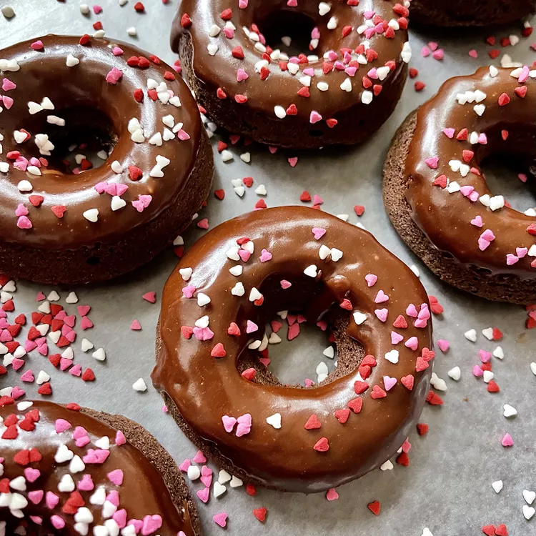

Chocolate Brownies

Soft chewy donuts and lovely chocolate coating it.
What else is there to say? Try this recipe out!
- Cooking spray
- 2 cups all-purpose flour
- ¾ cup white sugar
- ½ cup unsweetened cocoa powder
- 1 teaspoon baking powder
- 1 teaspoon baking soda
- 1 teaspoon salt
- ¾ cup milk
- 2 tablespoons milk
- 2 eggs
- 2 tablespoons butter, melted
- 1 teaspoon vanilla extract
- ¼ cup butter
- 1 tablespoon heavy cream
- 1 tablespoon milk
- 2 teaspoons corn syrup
- 1 teaspoon vanilla extract
- 1 ounce bittersweet chocolate, chopped
- 1 ounce semisweet chocolate chips
- 1 ¼ cups powdered sugar
-
Preheat the oven to 325 degrees F (165 degrees C). Spray 11 donut cups
with cooking spray.
-
Mix flour, sugar, cocoa powder, baking powder, baking soda, and salt
together in a bowl. Beat in 3/4 cup plus 2 tablespoons milk, eggs, 2
tablespoons melted butter, and vanilla extract using an electric mixer.
Beat until well blended.
-
Pour batter into a zip-top bag and cut off 1 corner. Fill each donut cup
about 3/4 full using the zip-top bag.
-
Bake in the preheated oven until a toothpick inserted into a donut comes
out clean, about 10 minutes. Allow to cool slightly, 5 to 10 minutes.
-
While donuts cool, combine 1/4 cup butter, cream, milk, corn syrup, and
vanilla extract in a small saucepan over medium-low heat until butter is
completely melted, 2 to 3 minutes. Reduce heat to low and stir in
bittersweet and semisweet chocolate until melted, 2 to 3 minutes more.
Remove from heat and whisk in powdered sugar to combine. Dip each cooled
donut into the glaze and let cool and set, about 15 minutes.
Thanks a lot for the recipe. Sourced from
here.
Main Page